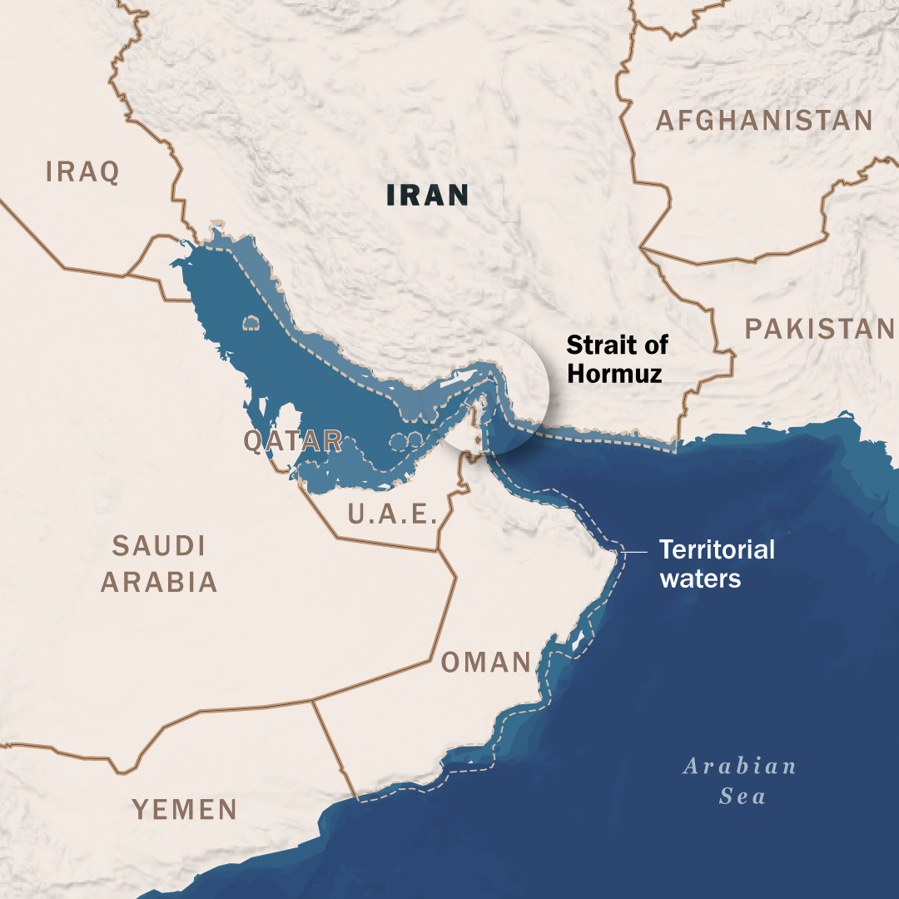
More Than Energy Moves Through Hormuz
The strait matters because of what passes through it: much of Iran's and the Gulf Arab states' food imports go west after transiting Hormuz, while a sizeable portion of the world's energy, fertiliser and other essential commodities go east. A prolonged disruption of this flow could have serious economic repercussions around the planet from spiking transportation costs and fuel shortages to widespread food insecurity as a fertiliser crunch hits more of the world's staple food planting seasons. Manufacturing of all kinds could also soon suffer from input scarcity.
Among commodities globally traded by sea, flows through the Strait of Hormuz account for one-quarter of the crude oil, one-fifth of the liquified natural gas, one-third of the fertiliser, half the sulfur, and one-third of the helium. Iran and, to a much lesser extent, the U.S. have stopped most of this commerce.
More Than Energy Moves Through Hormuz
The strait matters because of what passes through it: much of Iran’s and the Gulf Arab states’ food imports go west after transiting Hormuz, while a sizeable portion of the world’s energy, fertiliser and other essential commodities go east. A prolonged disruption of this flow could have serious economic repercussions around the planet from spiking transportation costs and fuel shortages to widespread food insecurity as a fertiliser crunch hits more of the world’s staple food planting seasons. Manufacturing of all kinds could also soon suffer from input scarcity.
Among commodities globally traded by sea, flows through the strait of Hormuz account for one-quarter of the crude oil, one-fifth of the liquified natural gas, one-third of the fertiliser, half the sulfur, and one-third of the helium. Iran and, to a much lesser extent, the U.S. have stopped most of this commerce.
More Than Energy Moves Through Hormuz
The strait matters because of what passes through it: much of Iran’s and the Gulf Arab states’ food imports go west after transiting Hormuz, while a sizeable portion of the world’s energy, fertiliser and other essential commodities go east. A prolonged disruption of this flow could have serious economic repercussions around the planet from spiking transportation costs and fuel shortages to widespread food insecurity as a fertiliser crunch hits more of the world’s staple food planting seasons. Manufacturing of all kinds could also soon suffer from input scarcity.
Among commodities globally traded by sea, flows through the strait of Hormuz account for one-quarter of the crude oil, one-fifth of the liquified natural gas, one-third of the fertiliser, half the sulfur, and one-third of the helium. Iran and, to a much lesser extent, the U.S. have stopped most of this commerce.
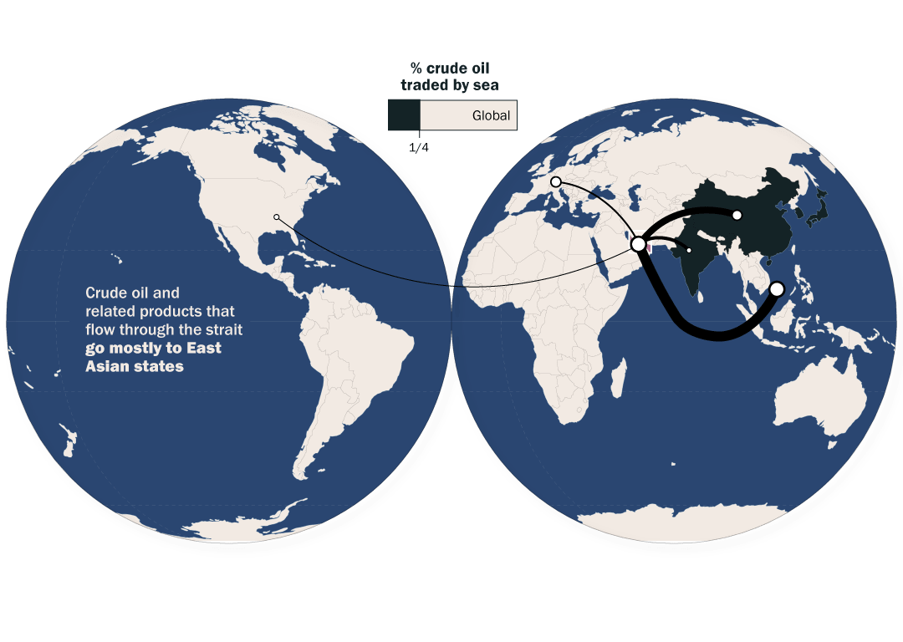
The drop in supply of crude oil and related products to China, India, Japan and South Korea has forced them to undertake stopgap measures, from drawing down reserves to sending an armada of tankers to North American exporters.
In theory, three pipelines across Saudi Arabia, the United Arab Emirates and Iraq could serve as alternatives to the strait. Together, they can accommodate approximately half of what typically crossed through Hormuz, but they, too, are vulnerable.
The drop in supply of crude oil and related products to China, India, Japan and South Korea has forced them to undertake stopgap measures, from drawing down reserves to sending an armada of tankers to North American exporters.
In theory, three pipelines across Saudi Arabia, the United Arab Emirates and Iraq could serve as alternatives to the strait. Together, they can accommodate approximately half of what typically crossed through Hormuz (albeit at elevated prices), but they, too, are vulnerable to attack, blocked sea lanes and the vagaries of domestic politics.
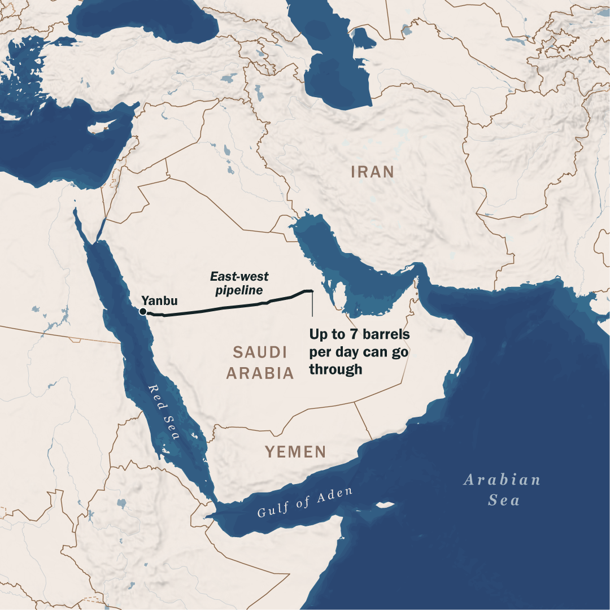
First, Saudi Arabia's East-West Pipeline can carry up to 7 million barrels per day across the kingdom to the Red Sea port of Yanbu, from which up to 5 million barrels can be made available for export. But it has limitations:
- Though the pipeline is buried, the production facilities feeding it, the pumping stations along it and the terminal facilities at its end could all be attacked.
- Riyadh's main customers are in East Asia, meaning that Red Sea cargoes mostly head south and would therefore fall within range of the Iran-backed Houthis in Yemen.
- Some traffic could be rerouted north to the Suez Canal and the Sumed pipeline, but the volume would be unlikely to equal that of the East-West Pipeline.
First, Saudi Arabia’s East-West Pipeline can carry up to 7 million barrels per day across the kingdom to the Red Sea port of Yanbu, from which up to 5 million barrels can be made available for export. But it has limitations:
- Though the pipeline is buried, the production facilities feeding it, the pumping stations along it and the terminal facilities at its end could all be attacked; indeed, a pumping station was struck by Iran just after the April ceasefire began, briefly knocking out some 700,000 barrels per day of throughput.
- Riyadh’s main customers are in East Asia, meaning that Red Sea cargoes mostly head south and would therefore fall within range of the Iran-backed Houthis in Yemen, who could choose to fire on commercial shipping should the conflict escalate.
- Some traffic could be rerouted north to the Suez Canal and the Sumed pipeline, but the volume would be unlikely to equal that of the East-West Pipeline.
Secondly, the Habshan-Fujairah pipeline connects the UAE’s production facilities to its Fujairah port just east of Hormuz, allowing up to 1.5 million barrels per day to bypass the strait. But the port is within range of Iran’s weapons and Iran has attacked it repeatedly during the war – most recently in early May, when the U.S. briefly tried to open its own corridor through the strait.
Thirdly, the Kirkuk-Ceyhan pipeline runs from Iraq to Türkiye, but it, too, has been operating well below its official capacity of 1.6 million barrels per day because of attacks by Iranian proxy groups in Iraq, previous pipeline damage and tensions in the relationship between Baghdad and the Kurdistan Regional Government.
The global food supply depends on synthetic fertiliser like the urea and phosphate types that pass through the strait. Blockage of the strait means that this fertiliser, inputs like ammonia and natural gas (which is both an input and a power source) cannot reach customers.
These customers include some of the world’s major grain and oilseed producers, like the U.S., Australia, Brazil and Bangladesh, which import large quantities of Gulf fertiliser, for which they will be hard pressed to find substitutes. Because of the restrictions on traffic, the price of the nitrogenous fertiliser urea was up about 40 per cent in global markets in the first half of April.
Countries where war has already severely disrupted agriculture, such as Sudan – where the UN documented famine in 2024 and 2025 and continues to warn of mass starvation – are even more vulnerable to another price shock.
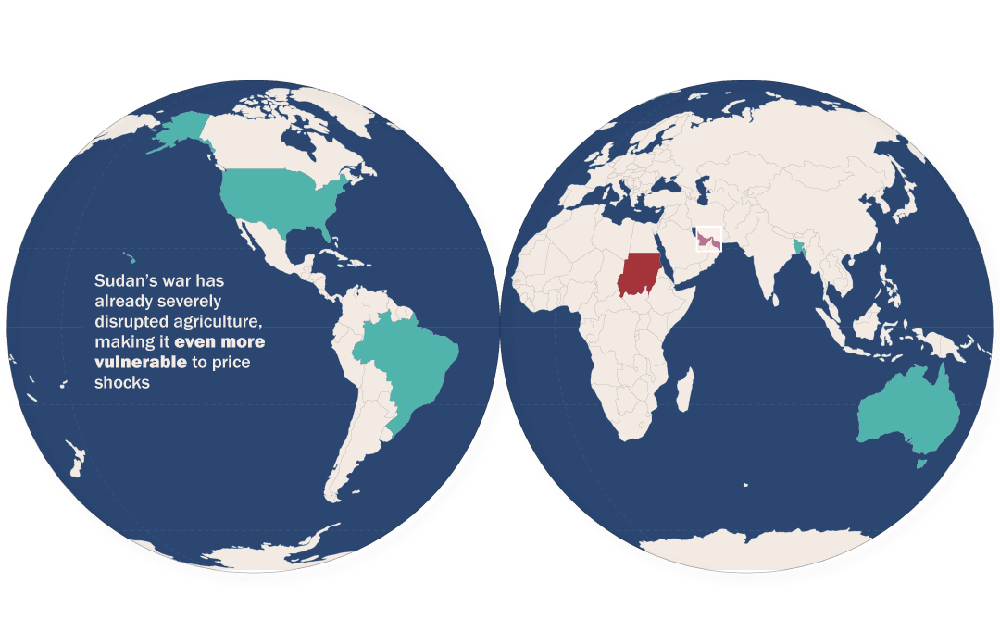
Other by-products of oil and natural gas production like sulfur and helium are also critical for the global economy. Sulfur is needed to produce phosphate fertiliser in Morocco and to process metals like nickel in Indonesia and copper in Chile. Helium is essential in semiconductor manufacturing, with Qatar supplying large quantities to major producers like South Korea and Taiwan.
Other by-products of oil and natural gas production like sulfur and helium are also critical for the global economy. Sulfur is needed to produce phosphate fertiliser in Morocco, which is home to up to three quarters of global proven phosphate reserves, and to process metals like nickel in Indonesia and copper in Chile. Helium is essential in semiconductor manufacturing, with Qatar supplying large quantities to major producers like South Korea and Taiwan.
Share of Fertiliser with Nitrogen Imports from Gulf Countries in 2023 (%), By Nitrogen Use per Area of Cropland (kg/ha) from Inorganic Fertilisers
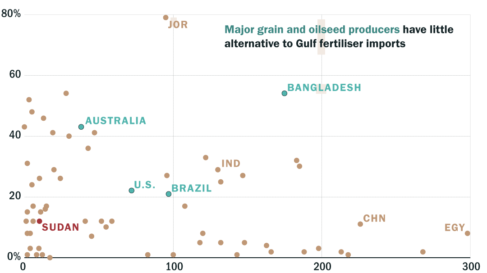
This massive hit to fertiliser supply represents a major risk for present or fast-approaching planting seasons for rice in the Eastern Hemisphere and, should it persist into September, for the winter wheat planting season in the Global North – with some impact already locked in as farmers decide what is worth planting.
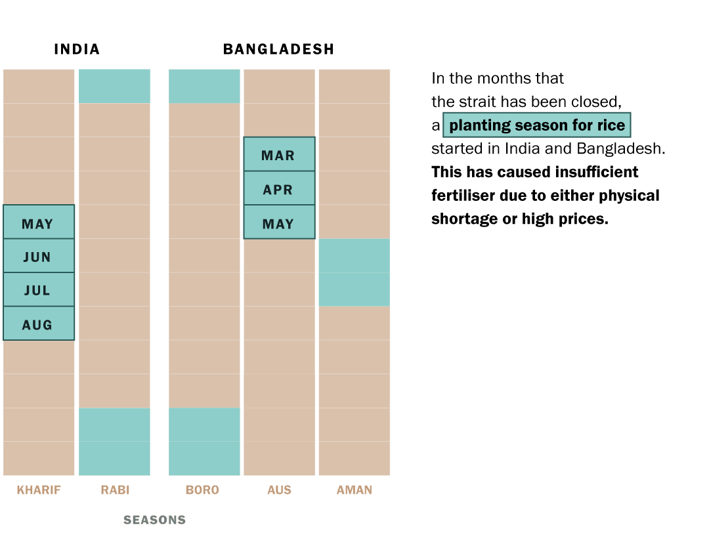
If supplies continue to be curtailed, the world's most important grains could see price increases stretching across multi-year cycles of planting and harvesting.
The growing likelihood of a historically strong El Nino developing later in 2026 further raises the risks to the world's food production.
If supplies continue to be curtailed, the world’s most important grains could see price increases stretching across multi-year cycles of planting and harvesting.
The growing likelihood of a historically strong El Niño developing later in 2026 further raises the risks to the world’s food production.
Sovereignty by Shipping Lane
Ship traffic through the narrow strait normally follows the two-lane Traffic Separation Scheme (TSS) originally proposed by Iran and Oman in 1968 and adopted by the UN’s International Maritime Organisation (IMO).
After the war began and Iran asserted control of the strait, it established an ad hoc route through its own territorial waters and demanded that ships seek Tehran’s approval for passage; use only the new lane; and, for at least some ships – mostly oil tankers – pay a toll sometimes running into the low millions of dollars.
This route usually involved looping north around Iran’s Larak island, and the levying of charges became known as the ‘Tehran Tollbooth’. Iran-linked ships and certain others sailed this route, including vessels from sponsoring states such as Pakistan, India, or Malaysia, all of which negotiated passage with Tehran.
A new improvised route later emerged as a result of Iran-Oman negotiations, with a small number of ships hugging Oman’s coastline south of the pre-war corridor, seemingly without paying tolls. By allowing these ships to pass, Tehran appeared to be sowing division among the members of the Gulf Cooperation Council, to which Oman belongs, most of whom strongly oppose any scheme to control the strait. Iran claims that discussions with Oman continue regarding new arrangements for the strait that may involve a toll or fees for transit services.
Iran published a map on 9 April of a unilaterally established TSS, a revision of its previous ad hoc route, which set an inbound lane north of Larak island and an outbound lane south of it. According to this new map, both the IMO-approved lanes in the strait’s centre and the recently negotiated Oman corridor were unsafe due to mines whose location Iran claimed it could no longer determine. Transiting ships largely used this route in the following weeks, even including a Qatar-owned LNG tanker heading to Pakistan.
The U.S. began its own blockade of Iran’s southern ports and coast on 13 April. It waited about three weeks for Iran to capitulate before attempting to break the standoff by wrenching open the strait rather than helping keep it closed. On 3 May, the U.S. announced plans to “guide” commercial ships through the strait of Hormuz under its new “Project Freedom”, beginning the following day. Iran promptly attacked multiple vessels in response.
The roughly two-day U.S. effort to loosen Iran’s stranglehold on the strait sought to shift the private sector’s perception of risk emanating from Iranian mines and other weapons. It established an “air defence umbrella” covering what it described as a mine-free “pathway” through Oman’s territorial waters – essentially a formalisation of the ad hoc southern corridor previously agreed to by Iran and Oman, now in defiance of Tehran. Rather than consistent escorts, the U.S. offered a lane under U.S. air and naval protection for ships to freely – and, supposedly, safely – use. The U.S. did not engage with the shipping industry or its Gulf Arab allies in planning the operation, catching both off guard. It then swiftly abandoned the endeavour, reportedly under pressure from Gulf states that saw it as potentially escalatory.
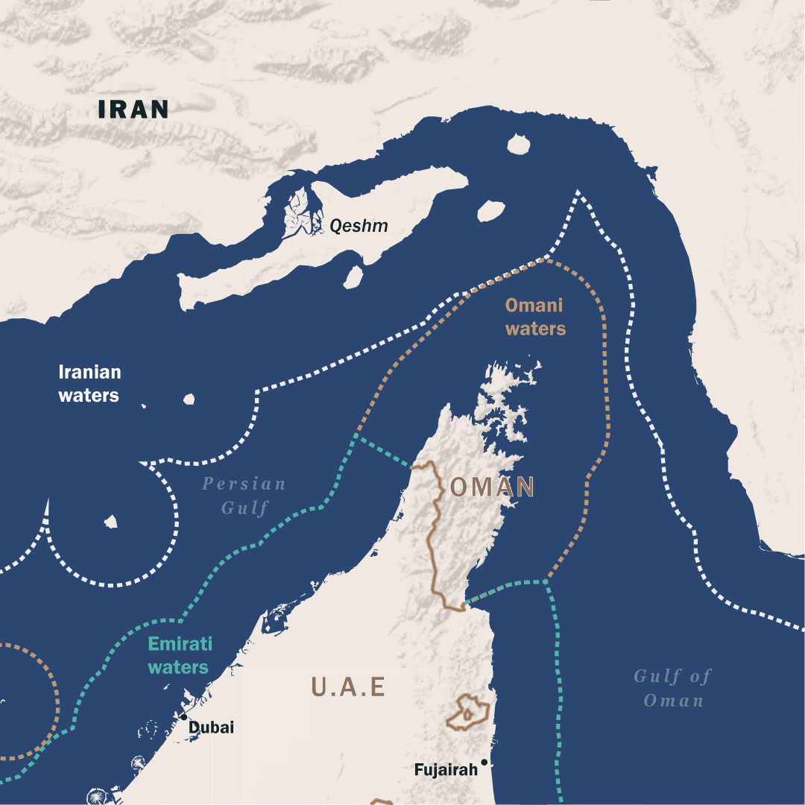
After the U.S. announced Project Freedom, Iran took a number of steps to cement its control of the strait. Key May announcements include:
- On 4 May, it published a map showing a claimed maritime control area stretching from west of Qeshm island to the opposite coast.
- On 5 May, it announced that it had established the Persian Gulf Strait Authority to handle coordination of ship transits.
- On 12 May, it broadened its definition of the strait to include the area between Siri island in the west and Jask port in the east.
- On 18 May, it launched a new insurance scheme in the strait, Hormuz Safe.
After the U.S. announced Project Freedom, Iran took a number of steps to cement its control of the strait. Key May announcements include:
- On 4 May, it published a map showing a claimed “maritime control area” stretching from west of its Qeshm island to the opposite coast and from its own coastline to east of the UAE’s port of Fujairah where its bypass pipeline terminates.
- On 5 May, it announced that it had established the Persian Gulf Strait Authority to handle coordination of ship transits, including a requirement that they submit details of ownership, insurance, crew and routing in addition to toll payment arrangements.
- On 12 May, it broadened its definition of the strait to include the area between Siri island in the west and Jask port in the east, purporting to enforce its claims by sinking one ship and seizing another off the UAE’s coast on 14 May.
- On 18 May, it launched a new insurance scheme in the strait – Hormuz Safe – either as a new fee on top of existing tolls or as a way to legitimise and rebrand the transit fee. Its new transit Authority became operational the same day, and later claimed oversight over Iran’s broadened maritime claim, again including Fujairah port.
By the third week of May, Iran was reportedly implementing a previously rumoured tiered system of passage, encompassing roughly:
- Friendly states like Russia and China
- Other states maintaining relations with Tehran like India and Pakistan
- Other bilaterally negotiated arrangements with states like Vietnam
- Private deals for specific ships, with up to $150,000 per ship charged
It remains unclear what if any fee is charged for each tier beyond privately negotiated transits and a toll of $1 per barrel charged to at least some loaded oil tankers. Passage remains barred for ships Iran deems linked to adversaries like the U.S. and Israel.
With this shift from an ad hoc corridor to a declared TSS with oversight by a new government body inside an expansive maritime claim, Iran is moving beyond the demand that alternative lanes be used and seeking to formalise a new maritime system – either as a permanent fixture or, at a minimum, as a bargaining chip for future talks with the U.S.
Battling Blockades and Competing Corridors
The U.S. initiated a blockade of Iran’s southern coast on 13 April. A picket of U.S. warships maintains a blockade line from the Iran-Pakistan border south west across the Gulf of Oman to Oman’s coast.
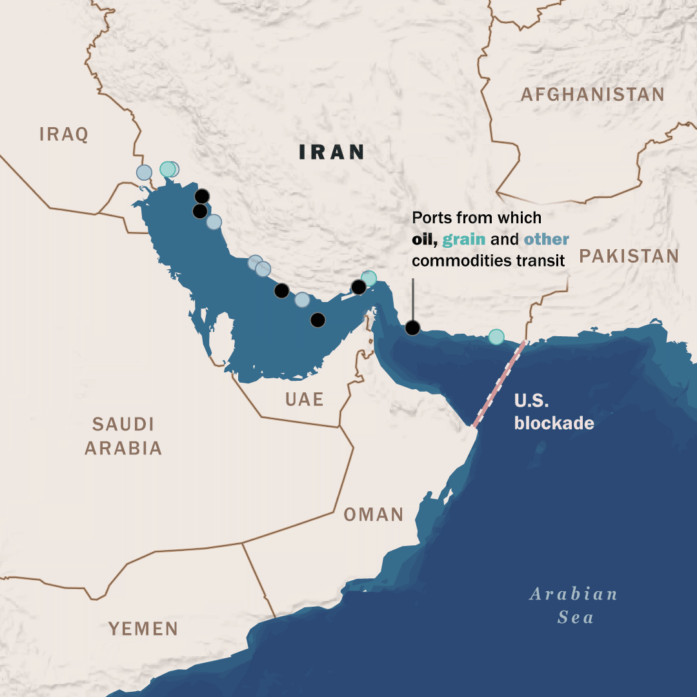
Though President Donald Trump initially announced that the U.S. would halt all shipping through the Strait of Hormuz, the U.S. military subsequently clarified that the blockade covers “vessels of all nations entering or departing Iranian ports and coastal areas”, with exceptions for humanitarian cargoes of food, medicine and other necessities.
By closing off Iran’s exports - especially of crude oil – the U.S. aims to force Iran to relax its own chokehold on the strait and offer other concessions, notably regarding its nuclear program. Washington hopes that, given limitations on Iranian storage capacity, preventing Tehran from exporting its oil will soon compel it to stop production, leading to severe, lasting damage to its oilfields – unless it yields to U.S. demands.
In practice, the U.S. appeared to begin its blockade selectively. From 13 to 21 April, the energy data firm Vortexa found that 34 Iran-linked tankers transited the U.S. blockade line in either direction – several of which were later intercepted. Subsequent reporting suggested a potential pattern in blockade porosity, namely a greater U.S. focus on oil shipments and greater tolerance for other cargoes such as liquefied petroleum gas. While at least one other firm disputed the claim that the blockade was porous, the Trump administration itself gave credence to the reported permeability when it asserted that it judged the blockade’s effectiveness by its effect on Iran’s economy, not by ship movement.
After that first week, the cordon began to solidify. The U.S. reported over 90 ships forcibly rerouted as a result of the blockade, with four would-be blockade runners disabled by U.S. fire, by 20 May.
Only one Iran-linked oil tanker has been confirmed as having made the full journey from loading at Kharg island to arriving east of Malacca since the blockade began.
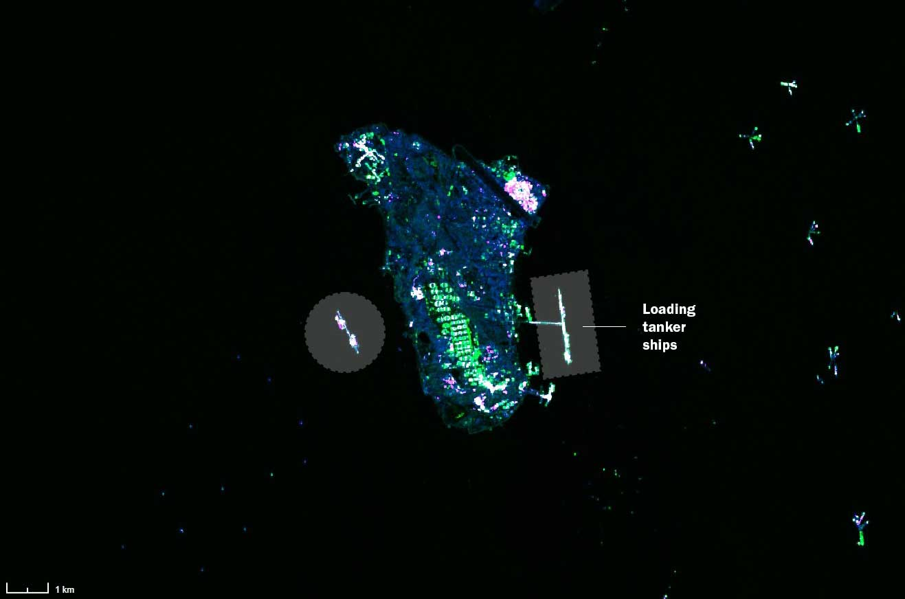
By mid-May, the extent of Iran’s remaining onshore storage was unclear, with maybe just a few weeks of capacity remaining if not full already, consistent with U.S. objectives for the blockade. Once all viable storage options have been exhausted – including empty tankers still running the U.S. blockade – and if export constraints remain, Iran will need to reduce oil output that exceeds its domestic refining capacity. Should production cuts be insufficiently spread across wells, it will take at least some of the wells offline. At that point, long-term damage to Iran’s oil production due to field shutdowns – particularly if these occur abruptly and cannot be carefully managed – is possible, especially for older fields.
Yet a range of industry and other analysts have pushed back on the more dire outlooks, presenting these as wishful thinking on the Trump administration’s part, and noting that Iran has extensive experience calibrating its oil output to match its geopolitical and economic circumstances. It remains unclear whether U.S. pressure or Iranian resilience will prevail.
WEEKLY OIL ONSHORE STORAGE (millions of BARRELS PER DAY)
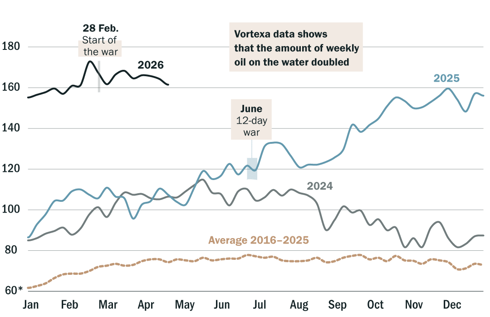
Iran may continue to receive payments from oil sales for months to come, irrespective of eventual shutdowns. It already had substantial crude oil and condensate on the water when the blockade began. Estimates vary, but it likely had at least 160 million barrels of crude oil and condensate on tankers either in transit or parked by late April. Though somewhere between 30 and 60 million of those barrels were located within the U.S. blockade area, well over 120 million barrels lie outside it. In other words, if this oil is not already purchased or otherwise spoken for, Tehran had the equivalent of three months of its recent daily exports afloat beyond the U.S. blockade when it started. Of course, for Iran to receive revenue from the sale of floating oil assumes that it can continue to circumvent ever-tightening sanctions. For now, China appears to have shrugged off intensifying U.S. sanctions on the Iran oil trade. Trump reported that President Xi Jinping stated an intention to continue buying Iranian oil during the U.S.-China summit in May.
Even absent floating storage, Iran might be able to mortgage future oil sales to China, earning revenue on oil not yet extracted – a previously common arrangement China employed in the Belt and Road Initiative – if it has not done so already.
Should it choose to do so, the U.S. could escalate its crackdown on Iran oil sales by going after Iran’s floating storage. Already, it has seized at least three Iran-linked ships, including two oil tankers in the Indian Ocean. Iran responded on 22 April, using swarms of fast attack boats to board and seize two ships attempting to pass through the strait – its first capture of ships in the war, facilitated by the ceasefire and the lack of hostile U.S. aircraft overhead.
In particular, the U.S. could ramp up its disabling attacks or seizures in three areas where Iranian tankers were concentrated as of 1 May: within the U.S. blockade area (mainly the Gulf and the Gulf of Oman); in the sea lane linking the Gulf of Oman across the Indian Ocean to the Strait of Malacca; and in a well-known hotspot for illicit ship-to-ship transfers and floating storage east of Malaysia. Other early May hotspots in effect outside U.S. reach because of their proximity to China include areas near Hong Kong and off the Chinese coast in the Yellow Sea.
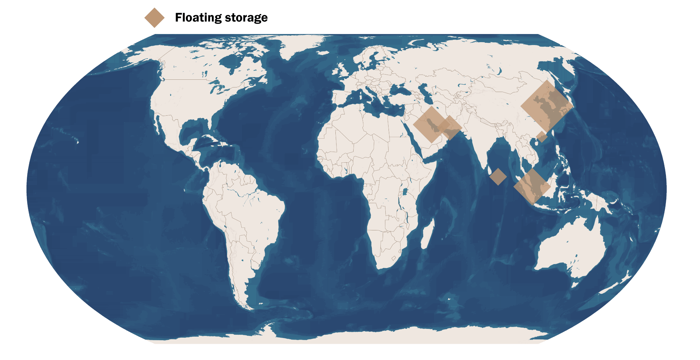
U.S. oil tanker seizures to date focused on the middle option, the route to Malacca, one of the world's busiest sea lanes. So far, the U.S. has not targeted the usual gathering area for Iran-linked tankers off Malaysia, possibly out of concern that Iran would counter-escalate with strikes in the Gulf region.
U.S. oil tanker seizures to date focused on the middle option – the route to Malacca, one of the world’s busiest sea lanes. So far, the U.S. has not targeted the usual gathering area for Iran-linked tankers off Malaysia, possibly out of concern that Iran would counter-escalate with strikes in the Gulf region, and because the closer U.S. seizures get to China, the more geopolitically sensitive they become. Warships attempting seizures too far inside the U.S. blockade zone would be at risk of attack by Iran, which could trigger further escalation. That said, the U.S. may decide the risks are worth it if other options have been exhausted.
Some analysts have speculated that the U.S. could also cut off essential Iranian imports by directly blocking ships or scaring off companies from attempting to reach Iran despite the blockade’s theoretical carveouts. Under this theory, intentionally cutting off imports of goods as crucial as grain – which typically come through the Strait of Hormuz – might compel Iran to surrender at the negotiating table more quickly than stopping its hydrocarbon output.
But even a more restrictive (and possibly unlawful) blockade likewise rests on a questionable premise given Iran’s domestic grain production and its alternative import routes for bulk grain. While Iran imports considerable volumes of grains and oilseeds annually, much of it is in the form of livestock feed, the total loss of which would likely damage its livestock industry and economy severely but not leave its cities bereft of bread. The Iranian wheat harvest begins in June, accounting for most of the wheat consumed in the country, and growing conditions have been broadly favourable. The balance of wheat for consumption would typically come through the strait to Iran’s main grain handling port Imam Khomeini, or smaller alternatives like Chabahar.
Iran also has recourse to lifelines like the International North-South Transportation Corridor, covering maritime routes through the Caspian Sea and rail corridors to either of its sides, in addition to further rail connections to China and road connections with neighbours like Pakistan and its major ports. Caspian and rail export capacity have ramped up in recent years, spurred by Russia’s efforts since 2022 to circumvent U.S. and European sanctions in response to its invasion of Ukraine.
The Corridor faces its own logistical challenges despite recent investment, but still offers alternative routes for grain and oilseed from major producers such as Russia and Kazakhstan. In recent years, both Russia and Kazakhstan have delivered large volumes of grain to Iran as Caspian and rail volumes have grown.
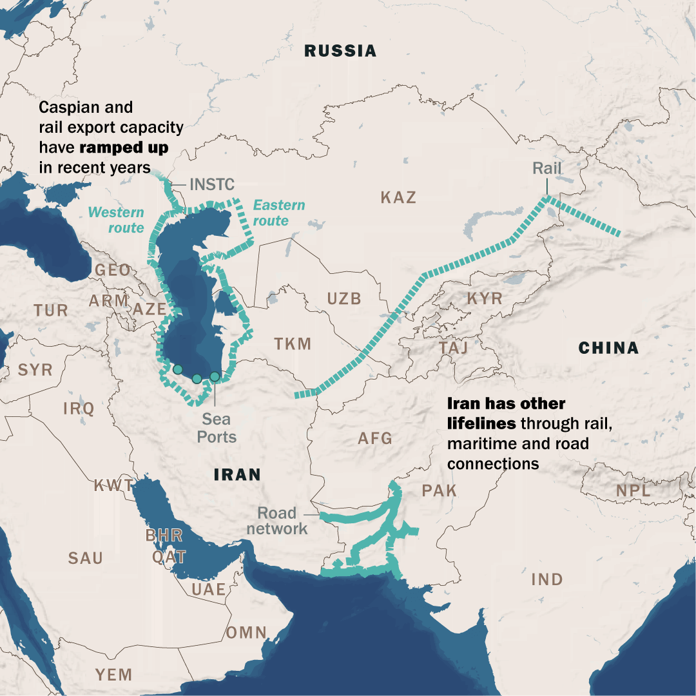
Even under a scenario where the U.S. attempts to blockade food, there probably will not be an absolute scarcity of staples like wheat in Iran. But that is no guarantee of food remaining affordable for the majority of Iranians, especially urban dwellers. In this respect, the blockade could still threaten to provoke a food price crisis – and possibly cripple the Iranian livestock sector – even if does not soon threaten mass starvation.
In any scenario, the blockade will still hurt Iran enormously. Iranian sources linked to its security services publicly reported that only 40 per cent of the country’s trade could be rerouted away from blockaded ports. Alternative corridors may keep vital imports coming in, but that may not be enough to stave off economic crisis and civil unrest over time. Indeed, the crisis has already begun: inflation soared to 67 per cent in April as millions lost jobs.
Whether the U.S. and Iran will now negotiate or escalate is unclear. Both sides still have many escalatory options.
For its part, Iran published a map of undersea cables digitally connecting the Gulf region to the rest of the world, along with related infrastructure, warning of their vulnerability and threatening to tax them. The prospect of economic collapse could yet lead it to step up attacks in the region – whether on U.S. forces or, more likely, its Gulf Arab neighbours and their economies.
As for the U.S., it could yet tighten its blockade or make good on its threats to resume hostilities with the aim of destroying all or part of Iran’s critical infrastructure, possibly again with Israel’s collaboration. Such escalation could borrow a page from Washington’s anti-Houthi playbook during its two-month Red Sea intervention in 2025, when the U.S. attempted to destroy the main port for importing fuel into Houthi territory while Israel incrementally bombed the two ports handling grain and other essential imports.
In any escalation scenario, the economic consequences are potentially grave for Iran, the Middle East and the world.
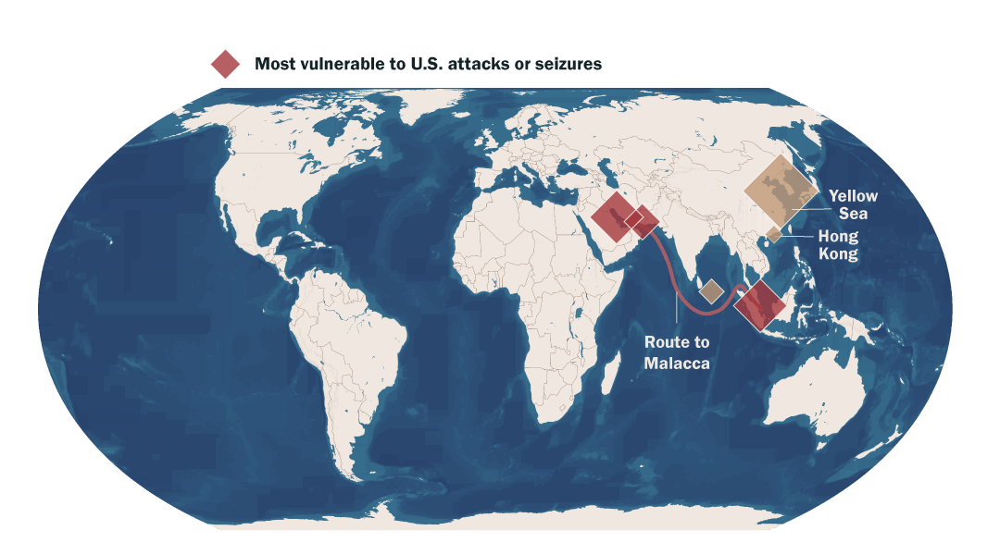
After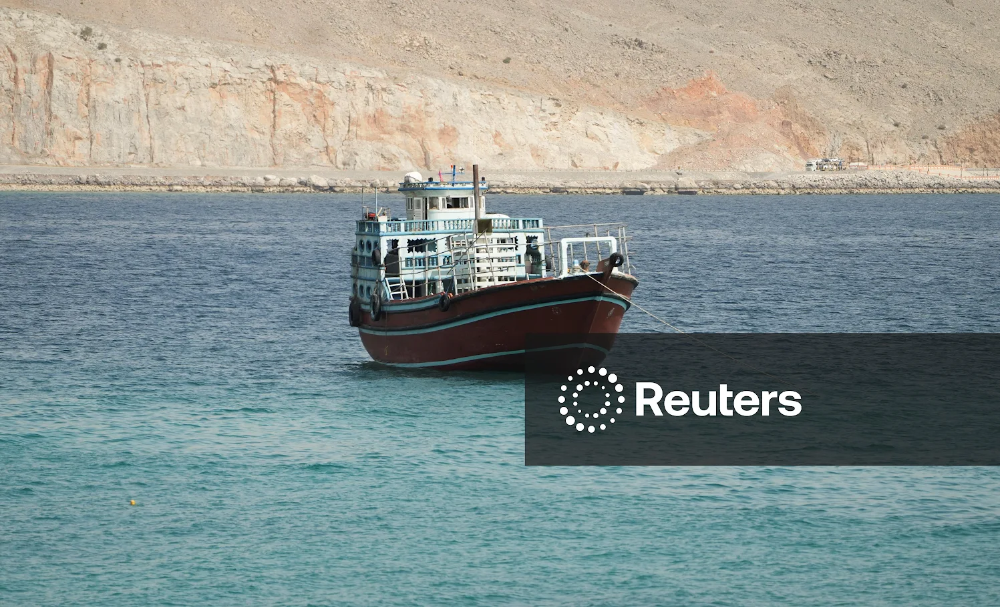
A Different Proliferation Problem
The Strait of Hormuz standoff will eventually come to a close, probably as part of a wider agreement to end the war. Any arrangement regarding the strait agreed to or even just tolerated by the U.S. and Iran would have implications for freedom of navigation globally. It would certainly be consequential if the arrangement included charging ships for passing through this international waterway – which, absent action by the UN Security Council, would likely be a contravention of widely accepted international law governing straits like Hormuz, in addition to U.S. sanctions absent a licence or carveout.
For Iran, control of the strait has become a considerable strategic asset. It views its grip as a way to exert influence and extract revenue by adjusting the toll price and currency in which it is paid, changing the number of allowable crossings per day or barring passage for certain states, nationals and types of cargo altogether. Controlling the strait also confers the ability to unilaterally influence global commodity prices. Keeping its hold would thus provide the Islamic Republic with powerful leverage in any negotiations, a future deterrent against foreign pressure or military action, as well as a potential source of windfall revenues.
Tehran may also view collecting tolls as the only reliable way to fund post-war reconstruction, which will be desperately needed, especially in light of Israel’s attacks on hard currency-generating industries such as petrochemicals and steel, as well as the wider damage caused by U.S.-Israeli bombardment. This need could be mitigated by the U.S. unfreezing an estimated $100 billion in Iranian funds held abroad, or sanctions relief, the value of which – contingent on its scope – could dwarf potential toll revenues, depending on the toll structure of any enduring arrangement.
Iran’s reported plans with respect to regulating passage through the Strait of Hormuz are upsetting to the Gulf Arab states, which would be forced to contend with this regime, and to a broader swathe of states concerned about the expansive maritime sovereignty claims and chokepoint tolls. Among other possible implications of Iranian control of the strait is increased risk of a similar, previously rumoured Houthi Red Sea toll – a possible replacement for reduced Iranian support – and of coastal states astride other key crossings like the Strait of Malacca following suit. States that incur costs in keeping those waterways free of pirates and other threats might be particularly drawn to this model.
The reactions of the three states abutting the Strait of Malacca illustrate this concern. In late April, Indonesia’s finance minister mused about a Malacca toll, although the government quickly walked the statement back. A toll comparable to what Iran has publicly suggested would mean annual Malacca transit fees of around $8.5 billion. For its part, Malaysia has not commented on a Malacca toll, but it has participated in the Iran’s new Hormuz arrangement. Kuala Lumpur has maintained an open channel with Tehran and is one of the few states to have negotiated the transit of ships through Hormuz, with Iran describing this arrangement as proof that Tehran does not forget its friends. Singapore, meanwhile, has condemned the idea of negotiating with Iran on Hormuz transits and rejected the idea of the first Malacca toll in hundreds of years. This stance may in part reflect Singapore’s role as a major refinery and ship fuelling hub – meaning its economy is better served by maximising Malacca transits rather than prompting rerouting through nearby straits of which it is not a part.
Two analogues to Iran’s actions – predating the modern law of the sea – might be the Sound Dues levied by Denmark in the Danish straits until 1857, which charged 1-5 per cent of cargo value depending on several factors such as nationality. This arrangement would not be lawful under current rules. Some also draw parallels to the Montreux Convention – a multilateral treaty allowing Türkiye to charge cost recovery for services rendered to Turkish straits transits as a way out of the impasse over Hormuz. This treaty predates the current body of international law but was allowed to stand. Ankara reported fees worth just under $230 million from over 51,000 transits in 2024 – hardly a lucrative toll and much less than what Iran has proposed. Cost recovery might be an option for Hormuz, but likely one that would only work if Iran wants its right to levy a fee in Hormuz recognised more than it needs the much higher revenue from a true toll.
If Iran’s proposed levy were to spread to other waterways, many voyages would be charged multiple times. Oil from the Gulf would incur a charge at Hormuz and again at Malacca on the way to major East Asian customers – doubling the cost of a flat-fee toll model. Other ways of taxing shipping may spread, too. In this proliferation scenario, one can envision a scenario in which oil from the Baltic Sea heading to India might pay a percentage of cargo value at the Danish straits (punishing when oil prices rise), cost-recovery fees at the Strait of Gibraltar (adding friction but not meaningful cost) and a flat fee at the Bab al-Mandab (biting more when oil prices fall), on top of existing and legal Suez Canal fees.